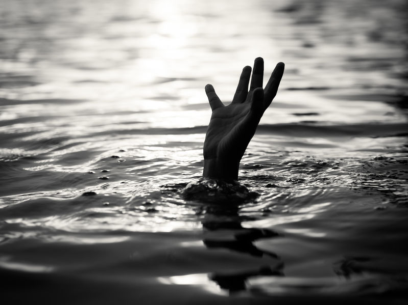
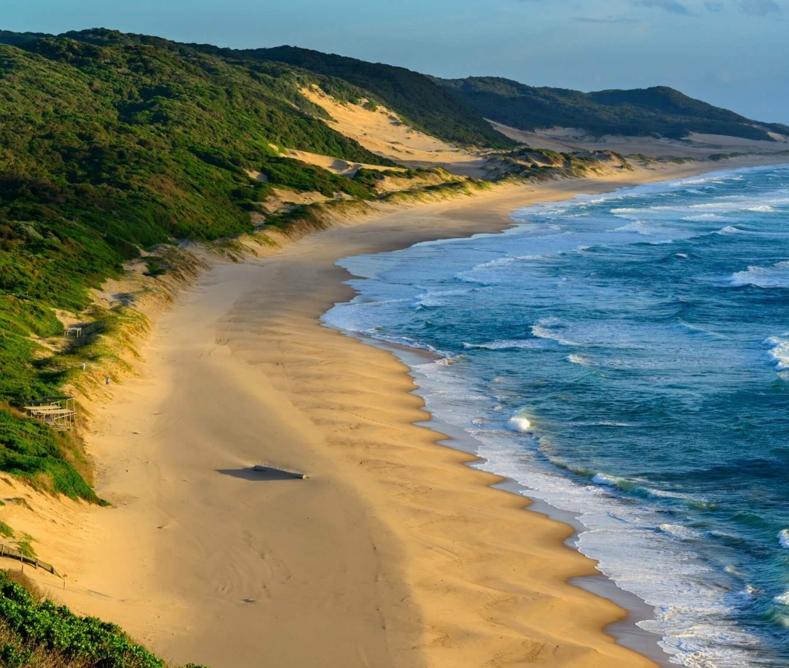
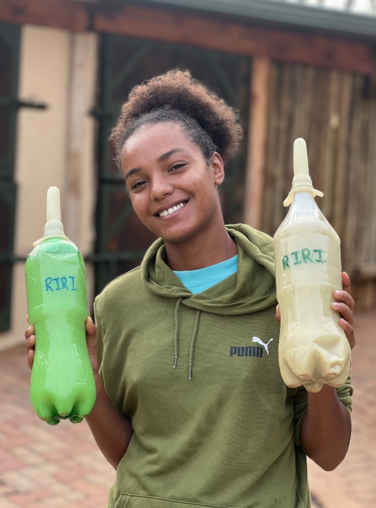

Long Swim To Freedom
A documentary expedition to protect South Africa's rhinos and save children from drowning.
For many children in South Africa, the daily commute to school is a life-threatening journey. Forced to cross dangerous bodies of water without basic swimming education, these students risk drowning simply to get an education. We aim to shed light on this issue to bring vital swimming lessons and safety resources to the communities that need them most.

The illegal wildlife trade has ignited a brutal poaching epidemic across South Africa, bringing rhinos to the brink of extinction. Due to the demand for their horns, poachers leave behind a trail of devastated ecosystems and orphaned calves. We want to document this war, raise awareness about the harsh reality and support the anti-poaching units fighting to protect these animals.

"Fearless Youth. Boundless Conservation."
Long Swim To Freedom is more than a documentary—it is a movement at the intersection of two preventable tragedies: child drowning and rhino poaching. By funding this project, you are investing in immediate, on-the-ground interventions and a cinematic film designed to drive global change. Here is exactly what your support achieves:
Funding certified swimming instructors, safe pool access, and essential water safety gear to end preventable drownings for children commuting to school.
Equipping rangers in iSimangaliso Wetland Park with vital survival gear, medical supplies, and technological support to protect rhinos and hippos.
Covering the production of a 35–40 minute feature film and educational toolkits. Filming on location in May 2026 to bring this story to the world.
Embedding local youth in the conservation story. We aim to leave behind sustainable infrastructure, skills, and partnerships that outlast the film itself.
Highlighting the climate realities of iSimangaliso's wetlands, connecting the dots between environmental degradation, wildlife loss, and human vulnerability.
Submitting to major networks (Netflix, BBC Earth, Nat Geo) and hosting VIP screenings to maximize worldwide awareness and drive lasting policy change.
South Africa's first UNESCO World Heritage Site — proclaimed in 1999 with Nelson Mandela as guest of honour — iSimangaliso is one of the most biodiverse places on Earth. It is the only ecosystem on the globe where the world's oldest land mammal, the largest land mammal, the oldest living fish, and the largest marine mammal all share the same habitat. This is where Long Swim To Freedom is being filmed.

At just 20 years old, Lesedi — a Zulu conservationist and esteemed global youth leader — is embarking on a bold mission in the heart of KwaZulu-Natal's iSimangaliso Wetland Park. In a place where crocodiles, hippos, sharks, and turtles co-habit, she will swim across Kosi Bay to confront two of the region's most urgent crises: human–wildlife conflict, and child drowning.
"I am not swimming to conquer the wild — I am swimming to show we can live with it. If we teach our children to love the water and respect the animals, we are not just saving lives, we are changing generations."
— Lesedi Hlatshwayo, 2025

Long Swim To Freedom is driven by a core team of young African leaders, experienced filmmakers, and conservation advocates — all united by a single belief: that storytelling can change the world.
Protagonist & Youth Conservation Leader
20 years old. Zulu conservationist. Global youth leader. The heart of this documentary and the person who will swim Kosi Bay to bring it to life.
Executive Producer & Founder, ARYI NPC
Africa Tourism Board Global Ambassador for Women & Youth Development. Founder of Africa Rise Youth Indaba and award-winning author. The driving force behind the project's implementation.
We are proud to work alongside organisations who share our commitment to conservation, community, and storytelling. Their trust and collaboration makes Long Swim To Freedom possible.
Whether you want to fund the documentary, provide vital resources, or collaborate as an organizational partner, we need your support to protect South Africa's wildlife and save children's lives.
Are you a brand, NGO, or institution looking to officially collaborate? Send us a message below to start the conversation.